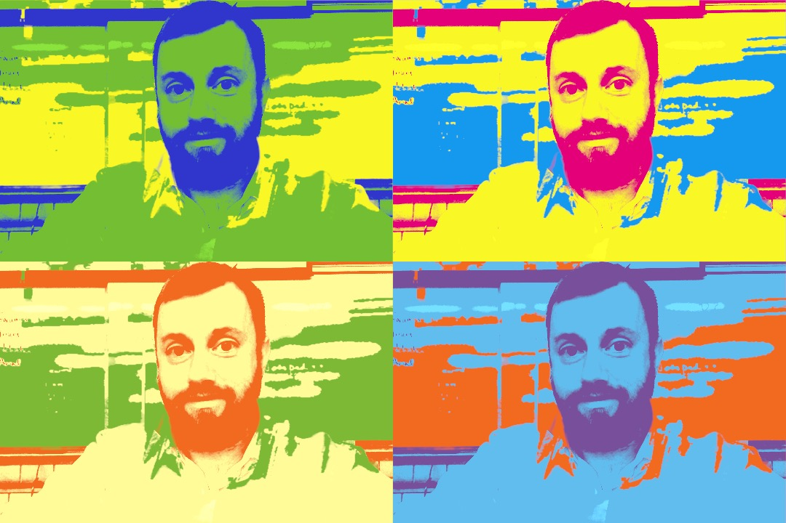

Thank you for visiting my web zone. I'm Joe Clark, a lecturer in management information systems at the University of Maine and at various times a writer, researcher, software developer, and consultant. I've been a computer nerd since before it was cool, was one of the first generation of web developers in the 1990s, and continue to take an interest in information technology. I did my PhD at USC and, since then, have had a focus on databases and analytics as I find that they represent the interface between philosophy and technology. I wrote a book on data engineering in 2016 and am working on a textbook on relational databases. I'm a skeptic of the hype around Big Data, but am optimistic about the opportunities it gives us for (re)learning how to think.
In personal life, I'm a native Mainer and a father of four. In 2016 I moved back to my home state after 21 years of "exile" having lived and worked in Los Angeles, New Orleans, Omaha, Phoenix, Taiwan, Hong Kong, South Korea and China. I can confirm that living in Maine is really "the way life should be", and am enjoying getting re-acquainted with the great outdoors through hiking, camping, boating, hunting, fishing, and other north woods activities. Lately I've been developing hobbies in woodworking, farming, and other real-world arts... perhaps as a reaction to the fact that so much of my professional work has been digital and intangible.
